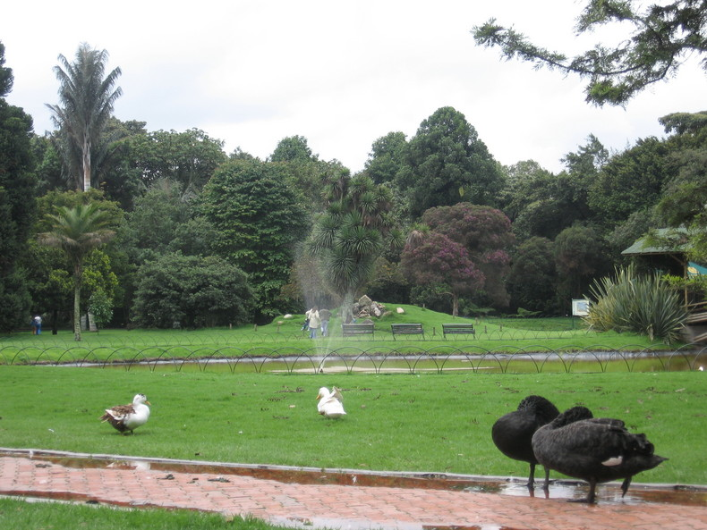

LOCALIZACION GEOGRAFICA
| NUMERO | NOMBRE |
|
1
2 3 4 5 6 7 8 9 10 11 12 13 14 15 16 17 18 19 20 |
usaquen
Chapinero Santafé San Cristobal Usme Tunjuelito Bosa Ciudad kennedy Fontibon Engativa Suba Barrios Unidos Teusaquillo Los Mártires Antonio Nariño Puente Aranda La Candelaria (Centro Histórico) Rafael Uribe Uribe Ciudad Bolívar Sumapaz |
"Division Politica-Administrativa de Santafe de Bogota".
Bogotá se encuentra situada en el centro geográfico del territorio nacional, a 2.600 metros (2.600 metros mas cerca de las estrellas, al decir de hoy) de altura sobre el nivel del mar, en una extensa planicie atravesada de norte a sur por el río Bogotá, que culmina su recorrido en la espectacular cascada conocida como El Salto del Tequendama. Es una ciudad moderna en la que conviven sectores y construcciones de valor histórico y patrimonial con edificaciones con la más alta tecnología .
|  |
"Fotografias Santafe de Bogotá".
Ese encuentro entre el pasado y lo actual le otorgan una identidad particular, permitiéndole al visitante recorrer diversos momentos de su vida y de su historia.
La ciudad de Bogotá, antiguamente Santafé de Bogotá se fundó el 6 de agosto de 1538 por el español Gonzalo Jiménez de Quesada.
La nueva ciudad se localizó en el sitio denominado Teusaquillo, un pequeño poblado indígena situado en las estribaciones de los cerros de Monserrate y Guadalupe que hacía parte del territorio ocupado por los Muiscas, grupo indígena perteneciente a la familia lingüística Chibcha, de cuya cultura han quedado muestras de orfebrería, textiles y cerámica.

|

|